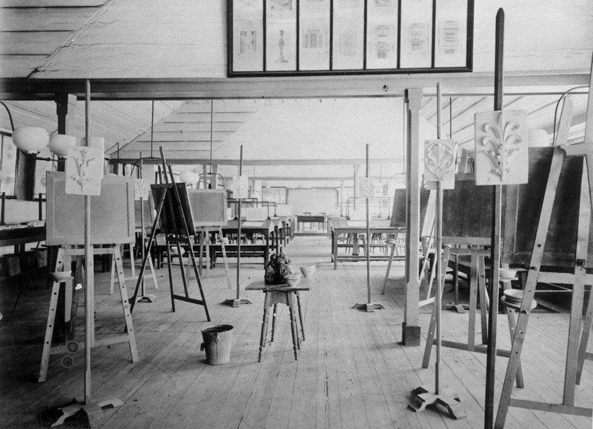
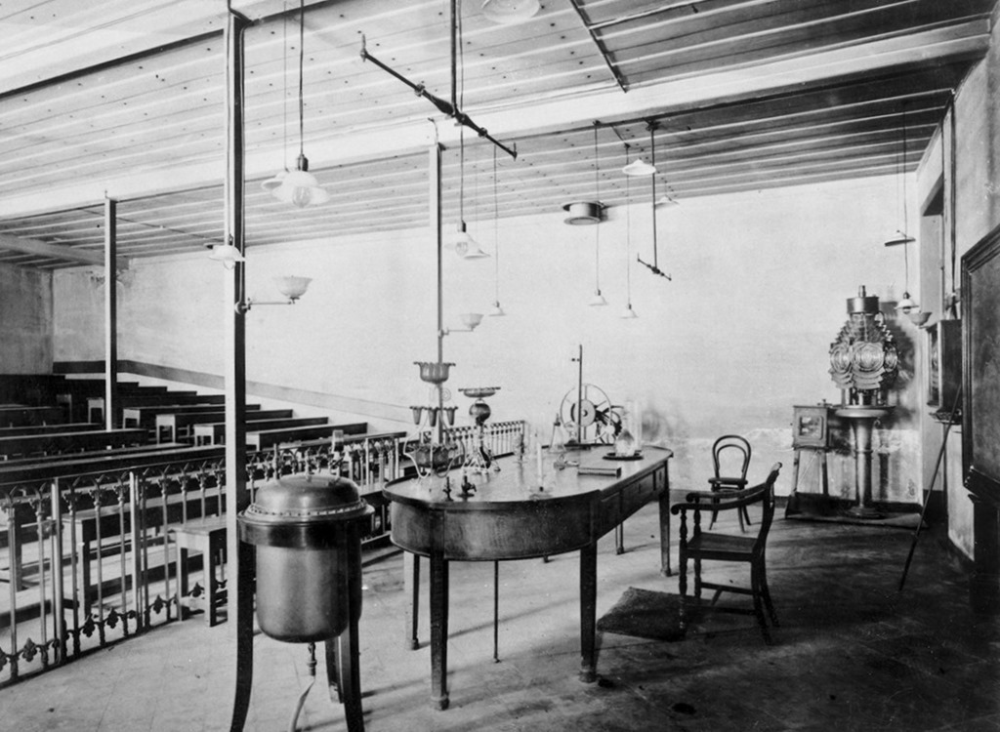
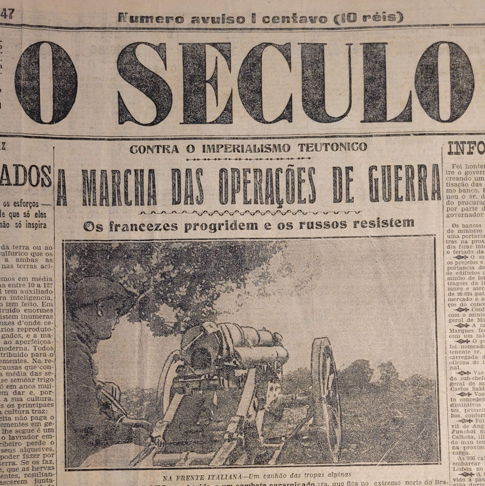
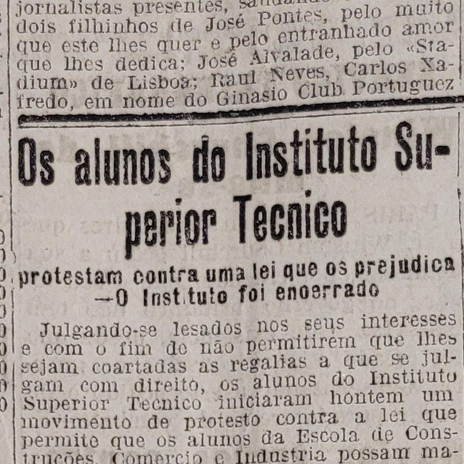

“Considero a redação destas notas como o último ato da missão de que me encarregou o Governo Provisório, embora não esteja inteiramente cumprida.” É assim que começam as Notas Histórico-Pedagógicas de Alfredo Bensaúde, Organizador e Fundador do Instituto Superior Técnico [1].
Depois de passar tanto tempo a estudar estes primeiros anos do IST, fica cada vez mais difícil de perceber como é que esta faculdade sobreviveu. Porém, a luta do Ensino Superior em Portugal tinha, e ainda tem, muitas mais frentes e o fascínio acompanha cada uma.
Após termos visto a criação do Instituto Industrial e Comercial de Lisboa (IICL) [2] e termos acompanhado a vida de Alfredo Bensaúde [3] até ao momento em que este retorna a Portugal, está na hora de começarmos a contar, verdadeiramente, a história do Instituto Superior Técnico.
A Primeira República já estava assente no poder havia um ano e com isso veio algo importante, o Diário do Governo, onde todas as informações importantes de cada Ministério eram escritas. Hoje em dia, continua como o Diário da República. No Diário nº. 121 [4], a 23 de maio de 1911, escreveram-se as seguintes palavras do Ministro do Fomento, Manuel Brito Camacho:
“A necessidade de reorganizar toda a instrução pública impôs-se ao Governo Provisório desde o instante em que assumiu as responsabilidades do poder [...]. Somos, na Europa, o país que conta o maior número de analfabetos.”
Mais à frente no documento, declara-se que o IICL será dividido em duas escolas completamente autónomas, o Instituto Superior do Comércio e o Instituto Superior Técnico, juntamente com os cursos e que tipos de ensino vão ser professados em cada Instituto. Alfredo Bensaúde foi convidado por Brito Camacho para ser o Organizador deste último, aceitando o cargo apenas com a seguinte condição: o Técnico teria completa independência burocrática, Alfredo falaria diretamente com o Ministro sem haver intermediários. Burocracia a mais iria destruir o propósito da faculdade que se estava prestes a criar, ideia bastante arreigada em Alfredo Bensaúde: “a importância social da burocracia a que vão pertencer (os estudantes), entrando nas carreiras oficiais, compensará a modéstia económica que estas lhes oferecem, não lhes impondo todavia tão grande dispêndio de energia como seria necessária para empreenderem carreiras independentes.”
Havia todo um sonho que o Técnico tinha de cumprir, na perspetiva de Bensaúde, de garantir ao Estado os seus alunos mais capazes e fazer com que estes parassem o ciclo vicioso da burocracia e fazer com que o país avançasse. Porém, esta autonomia conferida inicialmente foi vista como um mau prenúncio e muitos eram contra a ideia de uma instituição de ensino se autorregular. Nas palavras de Alfredo Bensaúde, “a sua autonomia foi provavelmente tida como o seu pecado original ou como um irritante atestado de incompetência às repartições públicas, habituadas como estavam a que o ensino no antigo Instituto delas dependesse em tudo.”

Dia 13 de novembro de 1911, deu-se início ao primeiro ano letivo e nem um mês depois foi fundada a Associação de Estudantes do Instituto Superior Técnico, AEIST. Eram cerca de uma centena de estudantes apenas que entraram neste primeiro ano. Do outro lado do mundo, não muito tempo antes, a China estava no meio de uma revolução que depois levaria à fundação da República Chinesa, enquanto que o México passava um momento conturbado politicamente da sua história, através de uma vaga de revoluções. Quase em simultâneo, a Itália declarava guerra à Turquia e a corrida ao Pólo Sul, na Antártida, acelerava. O mundo estava num momento bastante caótico. Não seria de espantar que, três anos depois, em 1914, a Primeira Guerra Mundial começasse. Desta forma, a primeira leva de estudantes formada pelo Instituto Superior Técnico saía diretamente da faculdade para os campos de guerra. Apesar de isto deixar Alfredo Bensaúde triste, uma vez que isto implicaria que os estudantes que ele queria que fossem para o governo nunca chegariam a ir, mal as primeiras cartas começaram a chegar da frente da guerra a sua opinião mudou.
Antes de entrarmos na Primeira Guerra, falemos dos anos mesmo antes desta começar. Uma das lutas constantes enfrentadas pelo Técnico nos seus primeiros anos foram as várias tentativas, por parte de múltiplos ministros, de implementar estruturas burocráticas que conseguissem retirar a sua autonomia. Com o chegar da guerra, criou-se um Conselho de Ensino Industrial e Comercial, cujo objetivo era tentar homogeneizar o Técnico com a Faculdade de Engenharia da Universidade do Porto. Este Conselho era constituído principalmente por professores de ensino médio e por burocratas e Alfredo Bensaúde não parou até conseguir livrar-se deles. Mais tarde nesse ano, 1914, ainda houve um projeto de lei sobre a reorganização das Universidades, onde se queria suprimir as cadeiras de Economia que havia no Técnico, tendo em conta que outros Institutos já as ensinavam. Alfredo Bensaúde, uma vez mais, combateu este projeto de lei justificando que não fazia sentido os alunos estarem a mudar de sítio só para terem uma aula. Quanto menos tempo os alunos perdessem, mais tempo livre teriam para se poderem focar naquilo que era realmente importante.

Voltemos aos primeiros alunos formados pelo Técnico, que foram delegados, em parte, para a manutenção e construção de caminhos de ferro na França, perto da linha da frente. Não sendo algo normal haver portugueses capazes de trabalho técnico até à altura, o comandante do Batalhão de Sapadores de Caminhos-de-Ferro, Tenente-Coronel Raul Esteves, enviou uma carta a Alfredo Bensaúde, onde agradeceu pessoalmente a este pelos cerca de 30 alunos que levou consigo, “que foram extremamente competentes em atividades de campanha, mais especificamente na construção e conservação das linhas férreas e, ultimamente, também exploração e tração.” Vários destes alunos chegaram a receber condecorações por parte dos exércitos inglês e francês, havendo alguns que integraram batalhões dos Aliados por convite.
Carlos Alves é um dos exemplos: teve de fazer vários trabalhos de emergências, sob bombardeamentos, um dos quais consistiu em, durante seis dias e sete noites, conservar permanentemente uma via livre para a passagem de comboios, sendo por isso condecorado pelos ingleses com a Military Cross. Outro exemplo é António Emídio Abrantes, já mais para o final da guerra, em 1918, cuja carta para Bensaúde dizia:
«...Tenho a enorme satisfação de ter sido escolhido para trabalhos de responsabilidade… Honro-me de pertencer a uma unidade a que um grande general inglês (Newman) chamou, diante de todos os oficiais, um batalhão de elite.
«Não são ocas palavras que proferiu; prova-o o facto de nos dar trabalhos de grande envergadura, que temos tido a felicidade de executar com acerto. Comando atualmente uma companhia de engenharia, em que todos os subalternos foram discípulos de V. Exª…»
Porém, enquanto a Primeira Guerra deixava os rios ensanguentados, as coisas em Portugal não estavam muito melhores. Logo em 1915, houve um acidente conhecido como a Catástrofe da “Companhia de Gaz” [5], em Boa Vista, onde morreram 14 pessoas. Para além disso, houve várias revoltas estudantis, tanto no ensino superior como no ensino médio. Uma vez mais, o governo tentou promulgar um projeto de lei sobre o ensino - tantas tentativas de reformular o ensino parecem um pouco ridículas assim à primeira. Porém, viviam-se os primeiros anos da República e os Governos iam e vinham com bastante regularidade. Isto refletia-se também nos anos letivos, tendo Alfredo Bensaúde dito que durante todos os seus nove anos como presidente, só três é que decorreram normalmente.
O problema, desta vez, retorna a 1911, aquando do decreto que determinou a criação do Técnico, onde havia uma cláusula que dizia que os alunos do antigo IICL podiam entrar diretamente no Instituto, enquanto que alunos de todos os outros Liceus tinham de passar por vários exames para serem admitidos. Porém, em 1915 foi decretado que todos os alunos da Escola de Construções, Comércio e Indústria poderiam também usufruir da mesma facilidade de acesso de entrada no Técnico. Isto fez com que os estudantes se revoltassem e, no dia 15 de novembro, desde manhã bem cedo, alunos do Técnico começaram a juntar-se para barrar a entrada a novos alunos - era o dia das matrículas do 4º ano letivo. Apesar de várias tentativas de negociar com os alunos, a Direção do Técnico decidiu fechar o edifício naquele dia. Porém, a história não ia parar aqui. Os estudantes sairiam do Técnico e iriam em direção à Faculdade de Ciências, que na altura ficava na Academia de Ciências.

Para algum contexto adicional, a Universidade de Lisboa também foi criada no mesmo ano que o Técnico, um pouco mais cedo até, e era composta pelas Faculdades de Medicina, Farmácia, Direito, Letras e Ciências. A de Ciências, como foi dito, ficava na Academia de Ciências e a de Letras, por falta de espaço, ocupava uma pequena parte do mesmo espaço. A de Medicina situava-se nas imediações do Hospital de Santa Marta e as de Farmácia e Direito ocupavam sítios privados arrendados pela Universidade para os alunos poderem ter aulas. Dito isto, quando os alunos do Técnico se reuniram na Faculdade de Ciências, foram logo ouvidos e recebidos pelos estudantes de lá, tendo os alunos da Faculdade de Ciências prestado solidariedade e entrado na luta também.
Quase em simultâneo, aconteceu uma greve dos estudantes dos liceus de Lisboa, dado que as reclamações das condições más em que estes se encontravam não estavam a ser atendidas pelo governo. Numa manhã, vários alunos do Lyceu de Passos Manuel e do Lyceu de Pedro Nunes reuniram-se em frente do primeiro estabelecimento, formando vários comícios para irem a outros liceus e escolas recrutar mais pessoas para a manifestação. Quando a manifestação passava em frente da Escola Marquês de Pombal, várias vozes da rua levantaram-se para dar vivas à greve. Em resposta a isto, da Escola, ouviram-se vários “abaixo à greve”. A situação rapidamente escalou, começando os alunos a apredejeram-se uns aos outros, algo que foi parado apenas quando a polícia e a cavalaria apareceram. Porém, a situação não parou aqui. Depois disto, os estudantes reuniram-se uma vez mais em frente ao liceu de Passos Manuel, onde estavam alunos em fileiras armados de paus de vassouras e pedras. Pouco depois, o contra-ataque chegava às portas do liceu: alunos da escolas Rodrigues Sampaio e Marquês de Pombal vinham a caminho do local. “Os calhaus, de lado a lado, não cessam de voar, fazendo em estilhaços os vidros de alguns estabelecimentos, candeeiros e janelas de várias residências particulares.” [5]
No mesmo dia em que isto aconteceu, a Associação de Estudantes da Faculdade de Ciências encarregou-se de tratar com todas as outras associações de estudantes do país para estudarem as reclamações dos alunos do Técnico e tomarem uma decisão conjunta para entregar ao governo. Pouco tempo depois, o Instituto Industrial e Comercial do Porto mandou uma nota de solidariedade para com os estudantes do Técnico.
Ainda em 1915, matriculou-se a primeira aluna, Maria Adelaide de Magalhães Quintanilha, que anulou a sua matrícula nesse mesmo ano. Maria, transmontana, era filha de Regina Quintanilha, uma das primeiras mulheres a cursar Direito em Coimbra, bastante influente e que chegou a exercer advocacia no Brasil e nos Estados Unidos. Continuando neste ano cheio de eventos, a primeira revista dos estudantes do Técnico, a Técnica Industrial, tem a sua primeira edição publicada.
Cinco anos após a sua fundação, Alfredo Bensaúde fez notar que as instalações do Técnico já não eram suficientes para a quantidade de alunos que se matriculavam e começaram então as discussões para o novo edifício. A procura pelo Técnico aumentava e isto comprovou-se pela maneira como foi resolvida uma greve prolongada da Companhia Carris de Ferro de Lisboa: foram chamados
“vários estudantes que entraram imediatamente ao serviço como condutores, guarda-freios, encarregados de limpeza e das pequenas reparações dos veículos ao final do dia. Do curso de Máquinas, passaram a noite a reparar as avarias dos numerosos carros danificados pelos grevistas, conseguindo pôr em circulação todos os necessários para restabelecer os serviços de viação na manha seguinte. [...] A greve terminou logo no terceiro ou quarto dia, porque o pessoal da companhia reconheceu que os seus serviços não eram indispensáveis. A direção da Companhia Carris de Ferro agradeceu ao Instituto, por nosso intermédio, os bons serviços prestados pelos seus alunos nesta conjuntura.”
O trabalho que havia por enfrentar não acabara, ainda assim. Ainda antes da Primeira Guerra terminar, a 5 de dezembro 1917 ouviram-se bombardeamentos no Tejo. Começava assim o Golpe de Estado de Sidónio Pais, golpe que acabou por abrir caminho para o futuro Estado Novo. Indo no espírito revolucionário, vários alunos do Técnico juntaram-se e clamaram junto do Ministro da Instrução Pública, Alfredo de Magalhães, pela demissão de Alfredo Bensaúde por este ser tão intransigente no que constava às bases regulamentares da escola. Porém, de acordo com a opinião do diretor [3], este grupo de alunos tudo o que queria na verdade era apenas ter direito ao título de engenheiros, sem exame, nem projeto final nem tirocínio (uma espécie de estágio numa companhia parceira do Técnico). O Ministro da Instrução deu ouvidos aos estudantes, algo que Alfredo Bensaúde nunca percebeu bem porquê e diz que nunca teve hipótese de o discutir com o Ministro, pois este último nunca se dignou a ouvi-lo. Esta questão foi levada ao Conselho Escolar, órgão máximo de decisão: despedir o seu diretor ou aceitar a cedência dos diplomas de engenheiro. Uma ligeira maioria decidiu em favor dos seus estudantes, de modo a não deixar a turba de estudantes ingovernável. O caos que se seguiu fez com que vários colegas do Instituto pedissem a Alfredo que este não se demitisse.
Enquanto em Lisboa, o Ensino Superior lutava por se expandir para sítios mais adequados, não havendo sequer uma aula de conferências onde convidados internacionais pudessem dar palestras, no resto do país a situação era muito pior. A Universidade de Coimbra [6] preparava documentos para pedir dinheiro ao Estado para que as dificuldades das suas faculdades fossem atendidas, em especial a biblioteca de Coimbra, que reclamava da acumulação de documentos históricos no chão por falta de espaço. No Porto, mostravam vários gráficos do decréscimo acentuado por parte do Estado em comparação com o que Coimbra e Lisboa recebiam. Todo o Ensino Superior estava em luta, todos os estudantes estavam em busca de um sítio decente onde pudessem estudar e aprender, de novos edifícios que estivessem a par das suas necessidades, de algo que permitisse uma maior instrução. Lentamente, quebrava-se o espírito conservador do Ensino em Portugal e as fissuras davam os seus frutos. Ainda levaria mais alguns anos até as coisas, pelo menos em Lisboa, passarem do papel para a realidade: o Técnico mudava-se para a Alameda e a Cidade Universitária era criada. Porém, isso é uma história para outro artigo.
Bibliografia
- Alfredo Bensaúde, “Notas Histórico-Pedagógicas sobre o Instituto Superior Técnico”
- João Dinis Álvares, “1852: O Início”
- João Dinis Álvares, “De Marrocos a Lisboa: o Fundador do Técnico”
- Diário do Governo Nº 121, Anno 1911
- Empresa Pública Jornal O Século, nº 140, Arquivo PT/TT/EPJS/A/1/0140
- Arquivo do Ministério da Fazenda, PT/TT/MF-SG/001-90-10/18082
Originally published by Diferencial - o jornal dos estudantes do Instituto Superior Técnico.